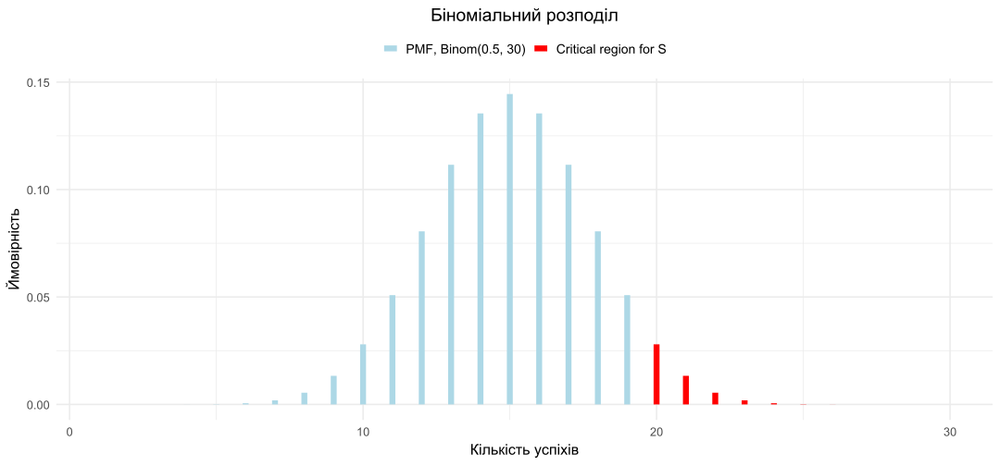
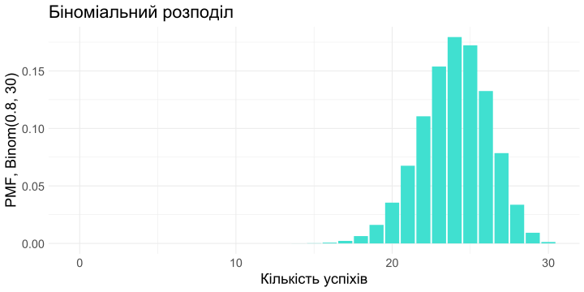
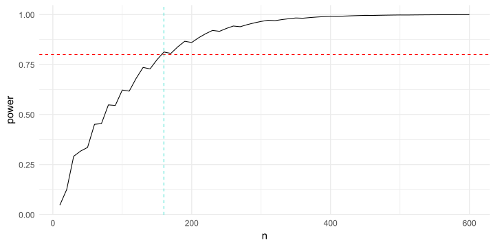
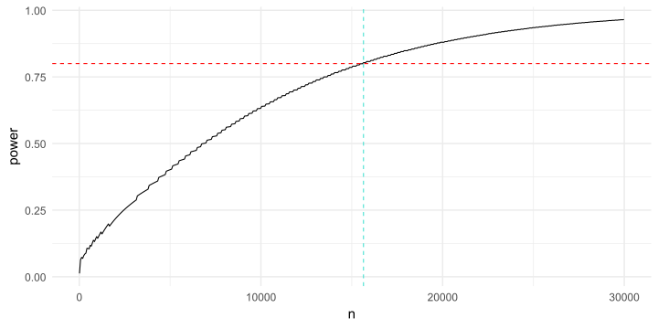
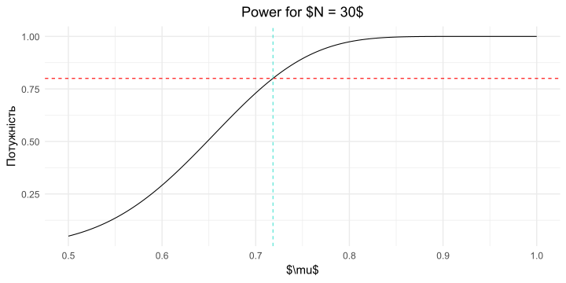

The statistic \(Q\) has a binomial distribution: \(Q \sim \text{Binomial}(30, 0.5)\).
n <-30# кількість випробуваньp <-0.5# ймовірність успіху# Приклад розрахунків ймовірності для кількості успіхівprobs <-dbinom(1:n, size = n, prob = p)
The probability function of a discrete distribution \(p_{\xi}(x)\) is the probability that a random variable \(\xi\) takes the value \(x\).
dbinom(10, n, p)
[1] 0.0279816
dbinom(15, n, p)
[1] 0.1444644
dbinom(14, n, p)
[1] 0.1354354
dbinom(16, n, p)
[1] 0.1354354
# Параметри розподілуn <-30p <-0.5# Визначаємо координати та ймовірностіx_grid <-1:nprobs <-dbinom(x_grid, size = n, prob = p)# Критична областьcrit_reg <- x_grid >=20# Створюємо дані для графікаdata <-tibble(x = x_grid,probs = probs,crit_reg = crit_reg)# Побудова графікаggplot(data, aes(x = x, y = probs)) +geom_segment(aes(xend = x, yend =0, color = crit_reg), size =3) +scale_color_manual(values =c("TRUE"="red", "FALSE"="lightblue"),labels =c("TRUE"="Critical region for S", "FALSE"="PMF, Binom(0.5, 30)") ) +labs(title ="Біноміальний розподіл",x ="Кількість успіхів",y ="Ймовірність",color =NULL ) +theme_minimal(base_size =16) +theme(plot.title =element_text(hjust =0.5),legend.position ="top",legend.text =element_text(size =14) )

Probability of the critical area
Calculate the sum of the probabilities of success in the critical area.
sum(probs[crit_reg])
[1] 0.04936857
What if \(Q \geq 19\)?
crit_reg <- x_grid >=19sum(probs[crit_reg])
[1] 0.1002442
Then the probability of error is even higher than 10%, which is not good for us at all.
Cumulative distribution function
The cumulative distribution function \(F_{\xi}(x) = P(\xi \leq x)\) is the probability that a random variable \(\xi\) will take a value no greater than \(x\).
In R it is calculated as pbinom(x, size, prob).
pbinom(19, size =30, prob =0.5)
[1] 0.9506314
The probability of getting 19 or fewer successes in our task is \(\geq 95\). And since \(P(\xi \leq 19) + P(\xi \geq 21) = 1\), we can calculate the level of significance of our criterion.
1-pbinom(19, size =30, prob =0.5)
[1] 0.04936857
Quantile
To select the critical region for the criterion, we would like to find the point where the area of the columns to the right of which is \(5\%\). That is, the area of the columns on the left is \(95\%\). This point is called a quantile. \[u_p(\xi) = \{x | F_{\xi}(x) = p\}\]
But with \(p = 0.95\) and our binomial distribution, there is no such point. We found out that there is a point to the right of which the area is \(0.494\), and the next one is \(0.1\). To determine the quantile in this case, we modify the definition:
The quantile \(u_p(\xi) = \{x | F_{\xi}(x) \geq p\}\) is a value that \(\xi\) does not exceed with probability at least \(p\).
Quantile: example
For the value \(\xi \sim Bin(30, 0.5)\), let’s calculate the \(0.95\)-quantile. We will solve the problem simply by selection.
\[P(\xi \leq 18) \approx 0.9\]
\[P(\xi \leq 19) \approx 0.951\]
\[P(\xi \leq 20) \approx 0.97\]
pbinom(18, size =30, prob =0.5)
[1] 0.8997558
pbinom(19, size =30, prob =0.5)
[1] 0.9506314
pbinom(20, size =30, prob =0.5)
[1] 0.978613
In R we can use the qbinom(p, size, prob) function.
qbinom(0.95, size =30, prob =0.5)
[1] 19
Custom criterion function
Now how do we find \(C\) for any \(n, \mu\) and any level of significance \(\alpha\)?
Find \(C\) such that \(P(Q \geq C) \leq \alpha\).
That is, you need \(P(Q < C) \geq 1 - \alpha\).
\(Q\) takes only integer values: \(P(Q \leq C - 1) \geq 1 - \alpha\), or \(P(Q \leq C) \geq 1 - \alpha\).
So, from the definition of quantile, \(C - 1 = u_{1 - \alpha}\)
So \(C = u_{1 - \alpha} + 1\)
make_binom_criterion <-function(n, mu =0.5, alpha =0.05) { q <-qbinom(1- alpha, size = n, prob = mu)return(q +1)}
Custom criterion function: example
make_binom_criterion <-function(n, mu =0.5, alpha =0.05) {# Find the quantile for the criterion q <-qbinom(1- alpha, size = n, prob = mu)# Return C for the criterion S = {Q >= C}return(q +1)}
cat("If Q >=",make_binom_criterion(30, 0.5, 0.05),"reject the null hypothesis")
If Q >= 20 reject the null hypothesis
The critical value of \(C = 20\), then the criterion looks like this:
\[S = \{Q \geq 20\}\]
Additional example
Number of deliveries — 50
Sufficient probability of success — 0.1, i.e. if the courier’s work costs 100₴, then the delivery cost is 1000₴.
set.seed(2024) # Встановлюємо початкове значення для генератора випадкових чисел# Кількість випробувань та ймовірність успіхуn <-50p <-0.1# Генерація 3 випадкових значеньrbinom(1:3, size = n, prob = p)
# визначаємо критичну областьcrit_reg <- x_grid >=10# обчислюємо суму ймовірностей у критичній областіsum(probs[crit_reg])
[1] 0.02453794
\(p\)-value
\(p\)-value
The \(p\)-value is the probability of obtaining a result that is more extreme than our observations, provided that the null hypothesis \(H_0\) is true.
Does the color of the car affect compliance with traffic rules?
\(Q = \xi_1 + \xi_2 + \ldots + \xi_{n}\)
\(H_0: \mu = 0.5\)
\(H_1: \mu \neq 0.5\)
\(\alpha = 0.05\)
If \(q \geq 21\) or \(q \leq 9\), then we reject \(H_0\).
\(p\)-value for the Two-way criterion
The criterion is \[S = \{|Q(\xi) - 15|\ \geq C\}\]
pvalue_two_sided_sum <-function(n, q) {# Calculate p-value for two-sided test with mu = 0.5 binom_h0 <-dbinom(1:n, size = n, prob =0.5) diff <-abs(q -15)# Calculate the right side of the two-tailed test (more extreme values on the right) right_sq <-1-sum(binom_h0[1:(15+ diff -1)])# Calculate the left side of the two-tailed test (more extreme values on the left) left_sq <-sum(binom_h0[1:(15- diff)])# Return the total p-value for the two-sided testreturn(left_sq + right_sq) # or 2 * right_sq for symmetric distribution}
pvalue_two_sided_sum(30, 21)
[1] 0.04277395
Asymmetric distribution
n <-30p <-0.8# Generate the binomial distribution databinom_h0_nonsym <-tibble(x =1:n,pmf =dbinom(x, size = n, prob = p))

In order to construct a two-sided criterion, you need to find regions on the left and right whose area is no more than \(\frac{\alpha}{2}\).
Asymmetric distribution: critical region
two_sided_criterion_nonsym <-function(n, mu, alpha) {# Будує двосторонній критерій для несиметричної задачі з доставкою# Параметри:# n: кількість доставок в експерименті# mu: ймовірність успіху в нульовій гіпотезі# alpha: рівень значущості критерію# Повертає:# C1, C2 для критерію S = {Q <= C1 або Q >= C2}# Створення об'єкту для біноміального розподілу binom_h0 <-rbinom(1, n, mu)# Аналогічно односторонньому критерію c2 <-qbinom(1- alpha/2, size = n, prob = mu) +1# За викладками вище c1 <-qbinom(alpha/2, size = n, prob = mu) -1return(c(c1, c2))}
pvalue_two_sided <-function(n, q, mu =0.5) {# Обчислює pvalue для двосторонньої альтернативи в задачі з доставкою# Параметри:# n: кількість доставок в експерименті# q: кількість успішних доставок# mu: ймовірність успіху при H0# Розподіл біноміальний для H0 binom_h0 <-dbinom(0:q, size = n, prob = mu)# Рахуємо для лівої частини pvalue_left <-pbinom(q, size = n, prob = mu)# Рахуємо для правої частини pvalue_right <-1-pbinom(q -1, size = n, prob = mu)# Обчислюємо формулуreturn(2*min(pvalue_left, pvalue_right))}
pvalue_two_sided(30, 28, mu =0.8)
[1] 0.08835797
It can be seen that the \(p\)-value is \(> 0.05\), so at a significance level of \(0.05\), even \(28\) successes are not enough to reject the probability of success of \(80\%\).
Power of statistical test
False negative error
Previously, we paid attention only to \(\alpha\) — significance level.
This parameter controls the probability of detecting a type I error (FPR, false positive rate): a deviation of \(H_0\) when it is actually true.
In business terms, how many inefficient projects are we willing to invest resources in?
Can we minimize this error??
Yes!!! To do this, it is enough to never discard \(H_0\)
\[
S \equiv 0, \alpha = 0
\]
If there is a Type I error, there is also a Type II error — False Negative Rate (FNR): accepting \(H_0\) when \(H_1\) is actually true.
In business terms: how many effective projects are we willing to miss?
\[
\beta = \text{FNR} = \mathbb{P}(S=0|H_1)
\]
Criterion for time of year ❄️☀️
\[
H_0: \text{it's summer outside}
\]
\[
H_1: \text{it's not summer outside}
\]
\[
\begin{equation}
Q = \begin{cases}
1, & \text{if it is snowing outside} \\
0, & \text{otherwise}
\end{cases}
\end{equation}
\]
\[
\beta = \text{FNR} = \mathbb{P}(\text{it is not snowing}|\text{it is not summer}) > 0.9
\]
As you can see, the criterion is quite useless.
The power of a statistical test (power, True Positive Rate) is the probability of correctly rejecting \(H_0\) when it is truly false, i.e., the ability to detect an effect if it really exists.
You can see that the power is about \(30\%\). This is quite a small value, because if our product is profitable, we will only see it with a probability of \(30\) percent using our test. We can easily miss the effect.
R and the power
get_stat_power <-function(N, mu_h0, mu_alternative, alpha) {# Обчислення статистичної потужності для біноміального розподілу# Створення біноміальних розподілів binom_h0 <-dbinom(0:N, size = N, prob = mu_h0) binom_alternative <-dbinom(0:N, size = N, prob = mu_alternative)# Обчислення критичного значення critical_value <-qbinom(1- alpha, size = N, prob = mu_h0) +1# Обчислення потужності power <-1-pbinom(critical_value -1, size = N, prob = mu_alternative)return(power)}
It is generally accepted that \(80\%\) of power is considered acceptable for work.
Let’s see how the power changes as the sample size increases, and how many experiments are needed to detect the effect at \(\mu=0.6\) in \(80\%\) of cases.
Code
n_grid <-seq(10, 600, by =10)# Обчислення потужності для різних розмірів вибіркиpower <-sapply(n_grid, function(N) get_stat_power(N, mu_h0 =0.5, mu_alternative =0.6, alpha =0.05))# Побудова графікуggplot(data =tibble(n = n_grid, power = power), aes(x = n, y = power)) +geom_line() +geom_hline(yintercept =0.8, linetype ="dashed", color ="red") +geom_vline(xintercept =min(n_grid[power >=0.8]), linetype ="dashed", color ="turquoise") +theme_minimal(base_size =15) +theme(plot.title =element_text(size =18, hjust =0.5),legend.position ="none" )

R and the power
What if we want to detect an even smaller effect? For example, if we want to reject the hypothesis at \(\mu = 0.51\). Often, an improvement in the probability of success by \(1\%\) can be significant for a product, so this question is not without meaning.
Code
n_grid <-seq(10, 30000, by =59)# Обчислення потужності для різних розмірів вибіркиpower <-sapply(n_grid, function(N) get_stat_power(N, mu_h0 =0.5, mu_alternative =0.51, alpha =0.05))# Побудова графікуggplot(data =tibble(n = n_grid, power = power), aes(x = n, y = power)) +geom_line() +geom_hline(yintercept =0.8, linetype ="dashed", color ="red") +geom_vline(xintercept =min(n_grid[power >=0.8]), linetype ="dashed", color ="turquoise") +theme_minimal(base_size =15) +theme(plot.title =element_text(size =18, hjust =0.5),legend.position ="none" )

Before each experiment, the analyst should think about test duration and number of participants.
To do this, you need to understand:
What effect is practically significant for the task?
How many subjects will it take to detect this effect more often than \(80\%\) of the time?
R and the power
The graphs show that a larger sample size is required to detect a smaller effect.
Let’s see how the power changes for different parameters \(\mu\) for a fixed \(N = 30\).
Code
mu_grid <-seq(0.5, 1, length.out =500)# Обчислення потужності для різних значень mupower <-sapply(mu_grid, function(mu) get_stat_power(30, mu_h0 =0.5, mu_alternative = mu, alpha =0.05))# Побудова графікуggplot(data =tibble(mu = mu_grid, power = power), aes(x = mu, y = power)) +geom_line() +geom_hline(yintercept =0.8, linetype ="dashed", color ="red") +geom_vline(xintercept =min(mu_grid[power >=0.8]), linetype ="dashed", color ="turquoise") +labs(title ="Power for $N = 30$",x ="$\\mu$",y ="Потужність" ) +theme_minimal(base_size =15) +theme(plot.title =element_text(size =18, hjust =0.5),legend.position ="none" )
In our experiment, we detect an effect well only if the probability of success in the population is at least \(72\%\).
Minimum detectable effect (MDE)
Minimum detectable effect
Minimal Detectable Effect (MDE, Minimal Detectable Effect) — this is the smallest effect that we can detect with an experiment (usually at \(80\%\) power).

In our example, \(\text{MDE} = +0.22\)
More formally
\(\text{MDE}\) for the hypothesis \(\mathsf{H}_0: \mu = \mu_0\) — this is the minimum effect of \(\delta\) at which the significance level criterion \(\alpha\) for testing this hypothesis, given the true parameter \(\mu = \mu_0 + \delta\) and sample size \(N\), will reject \(\mathsf{H}_0\) with power greater than \(1 - \beta\).
R та MDE
binom_test_mde_one_sided <-function(N, mu0, alpha =0.05, min_power =0.8) {# Генеруємо сітку можливих ефектів (delta) delta_grid <-seq(0, 1- mu0, length.out =500)# Обчислюємо потужність для кожного delta power <-sapply(delta_grid, function(delta) {get_stat_power(N, mu0, mu0 + delta, alpha) })# Знаходимо перший delta, для якого потужність >= min_power fit_delta <- delta_grid[power >= min_power]return(fit_delta[1])}
Usually, \(\text{MDE}\) is calculated for a reason, and the question of determining the sample size goes hand in hand with it.
Determining the sample size
In our task, we found \(30\) customers without first calculating how many of them we would need. But what if the resulting \(\text{MDE}\) is too large and you need to make it smaller because the expected changes are much smaller? Then the opposite problem is solved: given the required \(\text{MDE}\), determine the sample size. If we say that we want to detect \(+10\) pp, i.e. \(60\%\) of successful deliveries, then we need to find 160 test customers, as you can see from the previous graphs. If we search for 30 people for a month, for example, such a test can take almost six months. Therefore, it is worth considering allocating additional resources to find customers, for example, by engaging marketers.
Confidence intervals
Confidence interval
Confidence interval (CI, confidence interval) — the set of values of the parameter \(\mu_0,\) for which the hypothesis \(\mu = \mu_0\) is not rejected by the significance level criterion \(\alpha\) with a known probability \(\geq 1 - \alpha\).
The definition implies that different criteria can give rise to different confidence intervals. In this section, we will consider what intervals are generated by a two-sided criterion.
To do this, we will use \(\mu \in [0, 1]\) in increments of \(0.001\) and test the hypotheses.
R and confidence interval
two_sided_criterion_nonsym <-function(n, mu, alpha) {# Створюємо біноміальний розподіл для H0 binom_h0 <-dbinom(0:n, size = n, prob = mu)# Аналогічно односторонньому критерію c2 <-qbinom(1- alpha /2, size = n, prob = mu) +1# За викладками вище c1 <-qbinom(alpha /2, size = n, prob = mu) -1return(c(c1, c2))}
When we used a two-sided interval, we got a left-handed bound of \(0.439 < 0.467\).
It turns out that the one-sided interval gives us more information from the point of view of the left bound. At the same time, from the point of view of the right bound, we lose information completely. It is equal to 1 simply because the probability cannot be greater.
In fact, the right-hand side is usually not looked at in an analysis when we are looking for a positive effect.
R and one-way CI
Let’s say we got \(22\) instead of \(19\) of successes. Let’s plot 2 types of intervals.
The critical region has become larger because it now contains not \(2.5\%\), but \(5\%\) by construction. At the same time, the left critical region simply does not exist, so at large \(\mu\)\(19\) does not fall into it, and thus we do not reject the hypothesis.
Note that if we were to construct a two-sided interval, but with twice the \(\alpha\), hits in the right critical region would occur at the same \(\mu\) as in the one-sided criterion. Therefore, often to find a one-sided limit, a two-sided confidence interval with a larger\(\alpha\) is constructed, ignoring the right-hand side. This is convenient because you can use only one function for a criterion.
It is important that the randomness here is hidden in \(\mathcal{L}\) and \(\mathcal{R}\), not in \(\mu_0\).
The parameter \(\mu_0\) is unknown, but we assume it to be constant and not random.
Checking the property
To do this, we fix \(\mu_0\) and conduct a set of experiments:
Draw a sample from the distribution with parameter \(\mu_0\).
Calculate the statistic \(q\).
Calculate the confidence interval for \(\alpha = 0.05\).
Check that the proportion of cases when the parameter \(\mu_0\) is inside the interval is at least \(95\%\)
my_binomial_confint <-function(n, alpha, q) { mu_grid <-seq(0, 1, by =0.001) mu_no_rejection <-c()for (mu_h0 in mu_grid) { crit_vals <-two_sided_criterion_nonsym(n =30, mu = mu_h0, alpha =0.05)if (q > crit_vals[1] & q < crit_vals[2]) { mu_no_rejection <-c(mu_no_rejection, mu_h0) } }return(c(min(mu_no_rejection), max(mu_no_rejection)))}set.seed(2024)N_EXPERIMENTS <-1000SAMPLE_SIZE <-30latent_mu <-0.5# "True" value of the parameterbinom_true <-rbinom(N_EXPERIMENTS, SAMPLE_SIZE, latent_mu) # Generate binomial samplesconfint_fail_cases <-0for (i in1:N_EXPERIMENTS) { q <-sum(rbinom(1, SAMPLE_SIZE, latent_mu)) # Generate sum of elements confint_vals <-my_binomial_confint(n = SAMPLE_SIZE, alpha =0.05, q = q)if (confint_vals[1] < latent_mu & latent_mu < confint_vals[2]) {# All good } else { confint_fail_cases <- confint_fail_cases +1 }}cat(1- confint_fail_cases / N_EXPERIMENTS)
[1] 0.962
But it takes a long time! This is because during each experiment you need to build a confidence interval, and therefore test 1000 possible parameters \(\mu_0\).
Wilson confidence interval
The algorithm for building a confidence interval that we have just discussed takes too long. R has functions that allow you to calculate the interval faster. For example, you can use the Wilson method and the prop.test(correct = FALSE) function
set.seed(1111)N_EXPERIMENTS <-1000SAMPLE_SIZE <-30latent_mu <-0.5# "True" value of the parameterconfint_fail_cases <-0for (i in1:N_EXPERIMENTS) { q <-sum(rbinom(1, SAMPLE_SIZE, latent_mu)) # Generate sum of elements confint_vals <-prop.test(q, SAMPLE_SIZE, conf.level =0.95, correct =FALSE)$conf.intif (confint_vals[1] < latent_mu & latent_mu < confint_vals[2]) {# All good } else { confint_fail_cases <- confint_fail_cases +1 }}cat(1- confint_fail_cases / N_EXPERIMENTS)
0.948
😢
Wilson’s CI vs. N
The dependence of the proportion of successful hits \(\mu\) in the confidence interval on the sample size is shown in the graph.
Code
library(ggplot2)set.seed(20231212)N_EXPERIMENTS <-1000latent_mu <-0.5# "True" value of the parametern_grid <-seq(1, 1000, by =25)interval_success_rate <-numeric(length(n_grid))for (j in1:length(n_grid)) { n <- n_grid[j] confint_fail_cases <-0for (i in1:N_EXPERIMENTS) { binom_true <-rbinom(1, n, latent_mu) confint_vals <-prop.test(binom_true, n, conf.level =0.95, correct =FALSE)$conf.intif (confint_vals[1] < latent_mu & latent_mu < confint_vals[2]) {# All good } else { confint_fail_cases <- confint_fail_cases +1 } } interval_success_rate[j] <-1- confint_fail_cases / N_EXPERIMENTS}df <-data.frame(n = n_grid, success_rate = interval_success_rate)ggplot(df, aes(x = n, y = success_rate)) +geom_line() +geom_hline(yintercept =0.95, linetype ="dashed", color ="red") +theme_minimal() +theme(text =element_text(size =15))
Summary
Hypothesis testing algorithm
Business problem / hypothesis
Formulation of the null and alternative hypotheses:
\(\mathsf{H}_0: \mu = 0.5\)
\(\mathsf{H}_1: \mu > 0.5\).
Statistics of the criterion \(Q = \sum_{i=1}^n \text{Bernoulli}(\mu)\), \(q = 19\).
The distribution of \(Q\) at \(\mathsf{H}_0\) and the critical region (\(p\)-value) at \(\alpha = 0.05\).